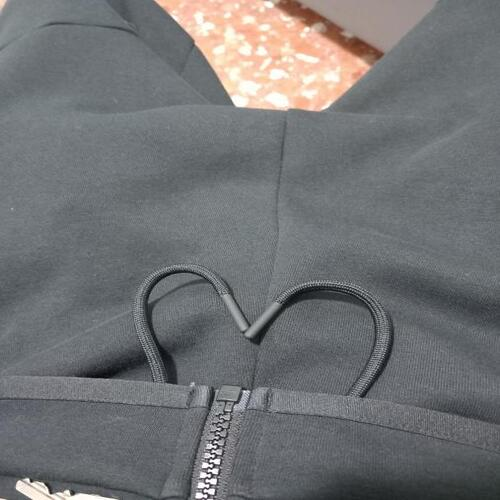

Sono Flavio Erriu. Ho 15 anni vivo a Roma e mi piace molto l'informatica, ho iniziato a usare il pc a 13 anni cercando di imparare sempre più cose, per me è come un passatempo
Social Media
Come Social Media ho solo instagram: flavioerriu33

Linguaggi di programmazione
Per questo sito ho usato come Linguaggi di programmazione JavaScripts, Html e Css
Perchè ho creato questo sito
Ho creato questo sito perchè mi stavo annoiando, è un sito semplice e inutile però l'ho voluto fare per passare un pò il tempo.